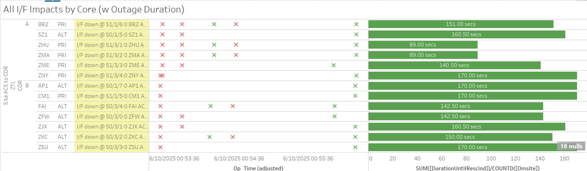

Weekly Highlights 20250604-20250611
5/31-6/4 - YYR WRE-C Freq Std Alarms
- 5/31 03:20 - YYR WRE-C starts flapping SE 30 Minor Alarm from Freq Std
- 6/2 13:52 - YYR WRE-C to Maintenance and Control Powered to address Freq Std Minor Alarms; Freq Std Minor Alarm did not clear; restored to Normal at 6/2 14:33
- 6/3 08:33 - YYR WRE-C to Maintenance and Control Powered again to address Freq Std Minor Alarms; WRE Faulted from Verification Mode when Freq Std init failed; attempted multiple Control Powers but Freq Std fails each time -- ref LCM 992845024...
- 6/4 16:46 - YYR WRE-C OTS to replace Freq Std --
ref LAD
992329224; restored to Normal
at 6/4 17:32
- YYR WRE-C - 6/3/25-6/4/25 - Freq Std failed -- ref LCM 992845024
6/5 - ZMA WRE-C Freq Std Minor Alarm
- 6/5 15:54 - ZMA WRE-C to Maintenance and Control Powered to address Minor Alarm for Freq Std -- ref LIR 994036224; Faulted from Verification at 6/5 16:26 with SE 60 Rcvr Init Fail; Control Powered again and received SE 312 Rcvr Exception Data Present at 6/5 16:54; restored to Normal at 6/5 17:06
6/5-6/11 - WRE Bias and L1/L2 Bias Alarms
- 6/5 19:38 - MTP WRE-A and WRE-C to Maintenance and Restarted to address WRE Bias Error; both WREs restored to Normal by 6/5 20:08
-
6/7 01:26 - MTP WRE-A / C WRE Bias Err SE 729 for all C&Vs
- 6/7 01:37 - MTP WRE-A / C to Maintenance and Restarted to address WRE Bias; both restored to Normal by 6/7 02:19
- 6/7 02:19 - MTP L1/L2 Bias Err
- 6/7 19:31 - MMD L1/L2 Bias Err
- 6/10 02:53 - L1/L2 Bias Alarm for MMD, MPR, and MTP
- 6/10 06:59 - L1/L2 Bias Alarm for MMD, MPR, MSD, and MTP
6/6-6/10 - ZMP WRE-C Faults
- 6/6 00:08 - ZMP WRE-C Faulted with SEs 29,52,53,59; changed to Maintenance and restored to Normal at 6/6 00:42
- 6/7 05:14 - ZMP WRE-C Faulted with SEs 29,52,53,59; changed to Maintenance and restored to Normal at 6/7 06:11
- 6/10 00:22 - ZMP WRE-C Faulted with SEs 29,52,53,59; Control Powered and restored to Normal at 6/7 06:11
6/6 - ZBW WRE-B Freq Std Replaced
- 6/6 16:43 - ZBW WRE-B Control Powered ON after
Freq Std replaced; verified to Normal at
6/6 18:35
- ZBW WRE-B - 5/30/25-6/6/25 - Freq Std failed -- ref LIR 990384924
6/9-6/10 - AP1 RFU Maintenance
- 6/9 12:37 - GUS Switchover - G30
- BR2 to Primary / AP1 to Backup for
Monthly Generator preventative maintenance - 6/10 15:59 - AP1 GUS to Maintenance for
semi-annual RFU maintenance -- ref LIR
1039651632; Multiple RFU Sig Events
during maintenance window --
- 6/10 18:15 - Control Powered after work complete; GUS Faulted twice during during Verification due to the Operator waiting too long in Verification Mode; Control Powered and restored to Backup at 6/10 20:01 without performing TLT Loopback Verification
6/10 - ZTL Comm Hits
- 6/10 00:53 - Comm Hit affecting both Cores at ZTL impacted multiple site comms; all lines restored at 6/10 00:56

- 6/10 02:50 - ZTL Ring 1 MX Eth Interface down for
all MX sites; All MX Ring 1 comms down hard;
all lines cleared at 6/10 03:02 (~9m
56s)
- 6/10 02:53 - L1/L2 Bias Alarm for MMD, MPR, and MTP
Various Comm Impacts
* Only captures major / long-term comm outages
CM1 Comms
- 6/4 15:22 - CM1 Ring 2 PRI comms flapping; last event cleared at 6/4 23:48 (~1676 seconds total)
- 6/5 15:53 - CM1 Ring 2 PRI comms flapping; last event cleared at 6/5 22:19 (~1545 seconds total)
- 6/5 18:38 - CM1 Ring 1 PRI / Ring 2 ALT comms down hard; both lines cleared at 6/5 18:46 (~482 seconds)
- 6/9 15:44 - CM1 Ring 2 PRI comms flapping; last event cleared at 6/9 23:23 (~2504 seconds total)
- 6/10 15:50 - CM1 Ring 2 PRI comms flapping; last event cleared at 6/11 00:27 (~5132 seconds total)
- 6/11 15:09 - CM1 Ring 2 PRI comms flapping...
- 6/11 18:22 - CM1 Ring 1 ALT comms flapping...
OTZ Comms
- 6/4 16:11 - OTZ Ring 1 PRI / Ring 2 ALT comms flapping; last event cleared at 6/4 16:26 (~104 seconds total)
- 6/4 17:45 - OTZ Ring 1 PRI / Ring 2 ALT comms down hard; both lines cleared at 6/4 18:00 (~895 seconds)
- 6/8 23:52 - OTZ Ring 1 PRI / Ring 2 ALT comms down hard; lines cleared at 6/8 23:54 (~86 seconds)
Other Sites
- 6/4 13:05 - ZDC-ZAU Ring 2 ALT COR-COR comms down hard; line cleared at 6/4 13:56 (~3044 seconds)
- 6/4 16:03 - ZDC-ZAU Ring 2 ALT COR-COR comms down hard; line cleared at 6/4 16:17 (~880 seconds)
- 6/4 20:42 - FAI Ring 1 ALT comms down hard; line cleared at 6/4 20:46 (~262 seconds)
- 6/8 03:30 - ZNY Ring 1 ALT / Ring 2 PRI comms down hard; lines cleared at 6/8 04:00 (~1822 seconds)
- 6/9 06:13 - ZDV Ring 1 PRI / Ring 2 ALT comms down hard; lines cleared at 6/9 (~480 seconds)
- 6/10 10:31 - BET/BRW/OTZ Ring 1 PRI / Ring 2 ALT comms down hard; all lines cleared at 6/10 11:26 (~3343 seconds)
- 6/10 11:53 - BET/BRW/OTZ Ring 1 PRI / Ring 2 ALT comms flapping; last events cleared at 6/10 12:14 (~305 seconds total)
- 6/11 13:16 - YQX Ring 1 PRI / Ring 2 PRI comms down hard; both lines cleared at 6/11 17:16 (~14385 seconds)
- 6/10 06:42 - ZKC Ring 2 ALT comms down hard for
MR-204337A - L3Harris tech will be onsite to transition to the new FW9500 equipment-- ref LIR 993472224; ZKC Ring 1 PRI comms down hard at 6/10 07:09; both lines cleared at 6/9 08:50 (~7681 seconds)
Mexico Ring 2 Down Hard...
- Targeting network upgrade in CY26
YFB Ring 2 Down Hard...
YFB requires satcom upgrades by NavCanada to restore... ref LIR 892056924
- 11/6/24 18:48 - YFB Ring 2 down hard... both rings to YFB down hard...
List of current offline WREs
List of current offline WREs -- ref WAAS Status Monitor
All Depot shipments to Mexico are halted until the customs process can be finalized
- MMD WRE-A - 3/31/25-... - Freq Std failed -- ref LIR 953873324
- MTP WRE-B - 11/18/24-... - Receiver inits failing -- ref LIR 898330924
- MMX WRE-A - 10/13/24-... - Freq Std failed -- ref LAD 879853824
- MMX WRE-C - 5/15/24-... - Processor failed and could not be restored -- ref LIR 798352224
- MPR WRE-B - 5/3/24-... - Inits failing -- looks like a bad freq std; due to shipping issues, there is no spare Freq Std and no ETA to recover WRE-B... -- ref LIR 44170821
5/11/23-... - MX Ring 2 Satcom Upgrade
- 5/11/23 17:01 - MX Ring 2 SatCom upgrade begins; MX Ring 2 OFFLINE until upgrade troubleshooting is complete
All sites are currently connected through Tijuana with new cables; but still large UDP data packets (WAAS Multicast) being dropped on Ring 2 -- no further actions to take at Tijuana
- All MX Ring 2 currently down with no ETA...
-
WAAS Second Level assessing situation before further troubleshooting...

Major Events


Core I/F Status

Comm Events

Mexico Comm Status